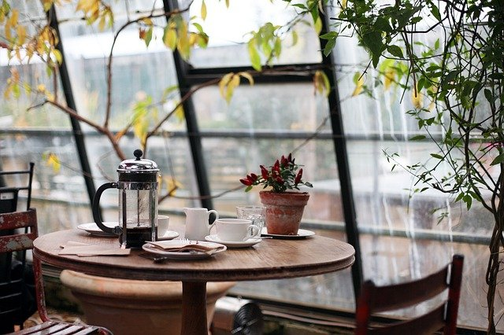
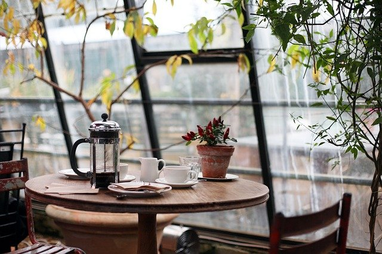

¡Bienvenidos!
Nos encargamos de brindarte un café lleno de magia

 

- NUESTRO ESTABLECIMIENTO OFRECE:
- Cafetería
- Bar
- Música en vivo
- Un ambiente tranquilo
- Lugar de eventos
- Restaurante
- Club de lectura
- DIRECCIÓN:
- laguna de lavandas #710, colonia Magnolia, Aurora.
- TELÉFONO:
- 152 08 758
- HORARIOS:
- Lunes a Jueves 8:00 a.m - 9:00 p.m
- Viernes a Domingo 8:00 a.m - 11:00 p.m
- MUSICA EN VIVO:
- Artistas contratados: jueves a domingo 4:00 p.m - 10:00 p.m
- Micrófono abierto: lunes a jueves 4:00 p.m - 8:00 p.m
INFORMACIÓN
ATENCIÓN: si no se presentan nuevos artistas a los días de micrófono abierto, será reemplazado por el músico empleado en turno.
En la mañana y después de las horas indicadas anteriormente se reproducirá música tranquila.